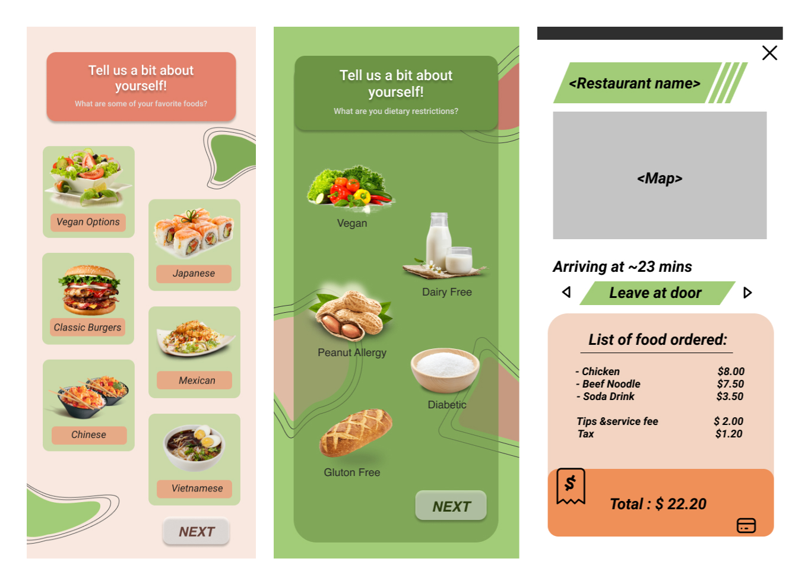
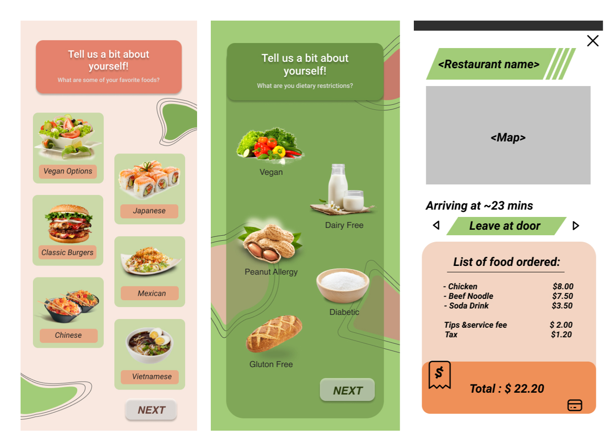

Dinery Food Delivery App
Team Members
Eugene Zhu
Andrew Ang
Candy Song
Description
Design an interactive smartphone app that addresses a user experience issue for similar apps.
Roles/Tools
- User Research - Discord
- Wireframes - Figma
- Prototyping/App Creation - Framer
Context.
What is Dinery?
Dinery is a food delivery mobile application that offers a one-of-a-kind food discovery experience not found in any other current application. Unlike its predecessors, such as Uber Eats and Doordash, Dinery focuses on improving various aspects of the food delivery process, ensuring that customers have access to the best possible food delivery experience.
The ultimate goal of this project was to introduce a new and improved food delivery solution that meets the demands of today's fast-paced world, making it easier for customers to discover and enjoy their favorite meals without any hassle.
The Problem.
Meal Indecision
Did you know that the average American couple spends approximately 132 hours each year deciding on what to eat? This was found through a study conducted by the restaurant discovery mobile app Seated. This statistic exists because people, specifically food delivery users, struggle with picking a single location or dish out of the hundreds of possibilities, which can be a frustrating and time-consuming process.
Our Solution.
Food Randomization Feature
To address this issue, we developed a food delivery application that streamlines the decision-making process and reduces the time people spend choosing what to eat. We implemented a food randomization feature into our app, which picks a dish for the user based on their preferences and eater type.
Our Process.
Research
We conducted extensive research to find any potential areas of improvement in the food delivery application field. We used 3 main research methods to generate our ideas.
1. User Research
- Demographic info → age group, profession, distance, etc.
- Common Goals → what are the users goals when using food delivery apps?
- Common Actions → what actions do they typically perform to get their desired outcome?
2. Market Research
- What kinds of food delivery applications exist?
- What are some issues users have with these applications?
- What are potential opportunities we can take advantage of in the food delivery field?
3. Brainstorming
- Mind mapping → How can we create a food delivery application that gives a better experience than other similar applications?
- What is a feature that we can implement to make our application unique?
We conducted user research through voice call with users of varying food delivery experience to gather a wide amount of research in regards to food delivery and food in general. Market research was conducted online through internet search, while brainstorming was done with my team through miro.
Research Findings
Upon gathering all of our research data, we organized it into categories based on the types of feedback received. We then reduced our scope to focus on the key issues we would focus on. We had three potential areas of focus for our application, which included the following:
1 | Finding Desired Food
Users found it very hard to find the right items that they want to eat when browsing different food delivery applications. This is due to visual overload on the app itself as well as the number of popups and side restaurants that appear, which can hinder the user's order time.
2 | Minimal Interaction
Users who order food through applications typically do not want many social interaction to get their food, as they want the app to do it for them. However, many food delivery apps have very vague and unclear information regarding restaurants as well as the app itself, which leave a lot of questions for the user with an unclear way to contact customer service for help.
3 | Making an Order Decision
Users have a really difficult time deciding what to eat. This only gets worse when using a food delivery application, as there is a huge variety of restaurants that are recommended to the user.
Based on these areas of focus, we created three main app ideas catered for different users.
Initial Ideas
After receiving feedback, we decided to proceed with the idea of randomizing food options in a food delivery application. We chose this feature as it was identified as the most practical and effective solution to the critical issue faced by food delivery applications.
Problem Space
During our user interviews and online research, we discovered a common issue people have with food delivery apps: they spend more time than they want scrolling through endless options and deals, making it hard to choose what to eat. In fact, we found a research study conducted by the restaurant service company Seated stating that "the average American couple spends 132 hours a year deciding what to eat." This is a significant amount of time that could be better spent elsewhere.
To address this problem, my team decided to develop a food delivery app featuring a food randomizer. The user can input their preferences and dietary restrictions into the app's data collection, and the randomizer will choose a dish for them. This feature is entirely optional and customizable, ensuring the user receives only food options that align with their preferences. Our app also incorporates an element of fun into the user experience, making the process of choosing a meal feel less like a chore. By solving this problem, we believe our app will provide users with a more efficient and enjoyable food delivery experience.
First Iteration: Finalizing Idea, Sketches + Mockups
Once we had the concept fleshed out, we created user personas for our app and features. We based our user persona designs on real people we interviewed who use food delivery apps and is the target audience for our feature.
To prepare for the prototyping phase, we created rough sketches and mock-ups. During a virtual voice call, my team and I collaborated on the sketches and I illustrated them using Photoshop and Indesign. To guide our design decisions, we studied existing food delivery apps similar to ours, but adapted the layouts to fit our company's style and theme. We also developed a user flow that demonstrates how users would navigate the app and access our feature. With the sketches completed, we moved on to creating mock-ups in Figma and Framer.
 

Second Iteration: Prototyping
On the next phase of our project, we refined our sketches and mock-ups and made them into prototypes. We used Figma to make the prototypes and then imported them into Framer to view the app. After making a basic useable prototype with buttons and logical UI flow, we got some friends and classmates to critique the usability and test for any bugs and errors in the app. We also asked them questions about our app to gauge whether or not our app was successful in what we wanted it to do. Some questions we asked included:
- What is the main function of this app?
- Do you think the overall design of the app is suitable for the type of app this is for?
- Imagine you are using this app to order a meal. Starting from the login page, how easy is it to complete an order compared to other similar apps?
- Is there anything you think should be changed/added to this app?
- Would you use this app over other similar apps like UberEats or SkipTheDishes? Why or why not?
Third Iteration: Fixing UI Errors, Final Prototype
After getting feedback, we managed to find a lot of usability issues, including broken links as well as phone resolution errors, and brainstormed ways to fix these usability errors through quick digital sketches created on Photoshop. Once we shared our designs and finalized our changes, we added them to the application by changing the interfaces on Figma and then re-imported them into Framer. We did a final round of user testing, and we were able to present our application to our class.
Final Result
Our feature was a resounding success in our final round of user testing, receiving positive feedback from all our testers. They noted that the food randomizer was a unique and useful addition to the app that greatly improved the user experience, making the otherwise tedious task of choosing what to eat more enjoyable. Through a quantitative research study with participants, we also observed that our app significantly reduced the time spent ordering food by almost half, a major accomplishment. However, we did encounter some issues with the app's overall usability, with a few users expressing difficulty differentiating between buttons and regular text or images. Given more time, we would focus on enhancing the overall clarity of the app's interface.
Click below to see the final product created in Framer.
Dinery App